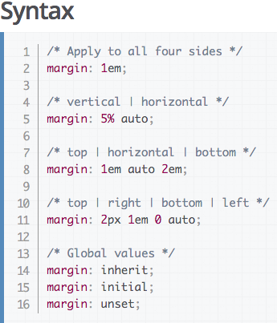
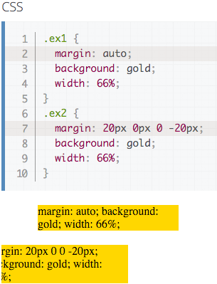
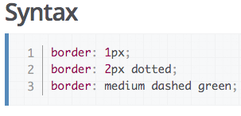
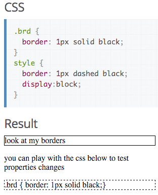

About The Author: Mike London can usually be found on TwitchTv watching Dota 2. @mikelawndawn #AllianceIsBack #kappaRoss
Css Concepts!
Today's Date: Sunday, January 17, 2016
One of the most important concepts to understand in CSS is the positioning of, and organization of elements. The developer can "float" an image or element to a side of the screen, adjust margins or the distance between the screen edges and the elements themselves. Let it be known that Margins can be changed within a HTML file with the style tag, however, This blog will cover implementing Margins in a CSS file.
The 3 ways to change the surrounding area around elements are: margins, borders, and padding. Margins change the relationships between neighboring elements. Borders encompass the element being modified, and padding changes the space between the element and its border. Changing the padding and margins are fairly similar.
I will show how to change the margins surrounding an element:

Applying margins to an element is fairly straight forward. When applying an equal margin all around an element, we would use the first command margin: 1em; This will apply a 1em margin around the working element.

When working in the CSS file it self, We will implement the syntax noted above. The .ex1 class is called on the first element above. This will create an auto margin surrounding the element. The .ex2 class is called on the lower element, creating a 20px margin from the top, 0px margin on the right / bottom and a -20px border on the left of the element. The -20px margin is what causes us to be unable to read the element.
When working with borders please use the following syntax:

The border syntax is fairly straight forward to follow. The formula is = thickness style color;
Here is an example of border code being implemented in CSS

As you can see using margins, borders, and padding are a great way to get the most out of your HTML. After you have a good grasp of these concepts it will be much easier to understand the more advanced topics of CSS positioning.
Image examples acquired from the Mozilla Developer Network.